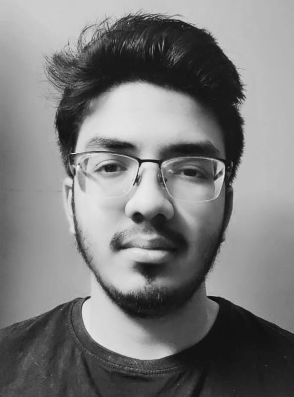

This is me

My name is Anirudh,I am from Hyderabad. I was born on 3rd November,2004.I have a younger sister and my father works as insurance manager and my mother is a homemaker.
I'm currently pursuing my btech degree from National Institute of Technology Warangal (NITW) located in Kazipet,Hanumakonda ,Telangana. My major is in Computer Science and I'm in second year as of now (2023-2024) .I'm also pursuing a minor degree in school of management field aka Management side.. .I'm very passionate about coding and exploring new cutting edge phenomena's across the globe .My hobbies are playing cricket, drawing pencil sketches of fascinating objects,and I even like to read scific books mainly focussing on time travel or either adventure based novels.